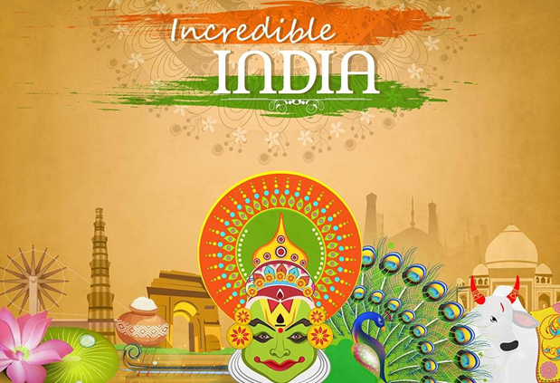

<html>
<body bgcolor= " YELLOW"/>
<head>

<center>
<h1>                                                                INFORMATION  ABOUT  SST  PROJECT</h1>
</center>
<h2>   India is a land of rich culture, heritage, traditions.</h2>
<h2>Many foreigners were attracted towards India due to accessible geographical boundaries</h2>
<h2> Various INDIAN  hindu scripts like Buddhists scripts were  translated from Sanskrit to Chinese by Chinese travelers</h2>
<center>

<div align="center">
<width:100px;height:200px;>
</div></center>
</center>
<center>
<h1>                                                                     HISTORY</h1>
<HR></HR>
<h1> TRADE</h1>
</center>
<h2>People traded in ancient times to access good and resources that were not available in their region...</h2>
<center>
<hr></hr>
<h1>CULTURE</h1>
</center>
<h2>Ancient indias culture was rich and diverse with many aspects that are relevant today</h2>
<hr></hr>
<center><h1>RELIGION</h1></center>
<h2>India was the home to several religions such as Buddhism, Jainism and Hinduism</h2>
<hr></hr>
<center><h1>LEARNING</h1></center>
<h2> The method of learning in ancient India was ORAL TRADITION . </h2>
<hr></hr>
<h1><center> GEOGRAPHY </center></h1>
<h1>what are the routes to reach India ???</h1>
<h2>The routes to reach India are by </h2><h1>Air, Land and Sea</h1>
<h1>What are its Geographical features???
<h2>Its geographical features are</h2><h1>the great mountain zone, plains of the Ganga and the Indus, the desert region and the southern peninsula.</h1>
</head>
</html>